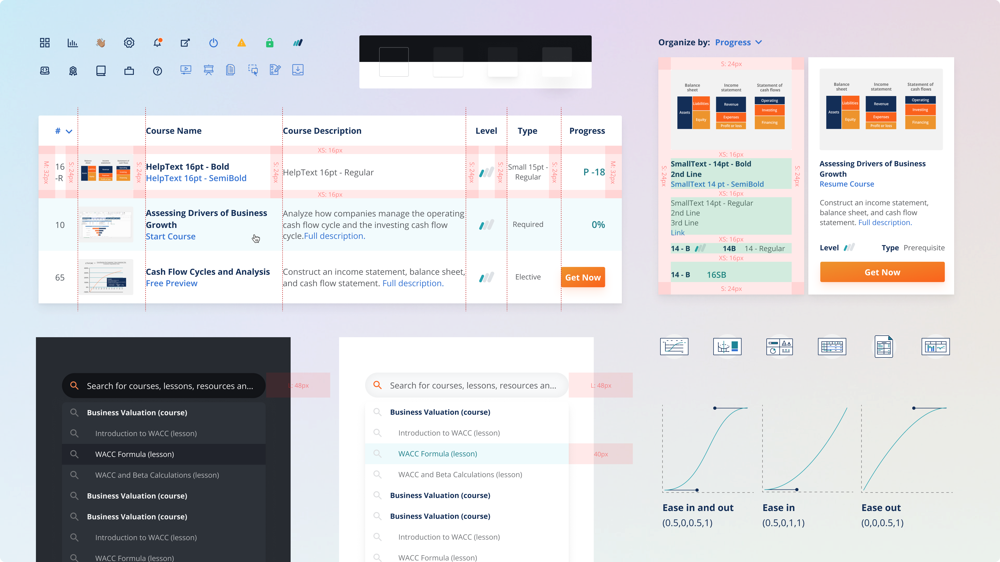

A theme library that ensures design consistency, accessibility and scalability. The library includes UI components, visual styles, animation guidelines, brand guidelines, and do's and don'ts to support scalability.
This was a self-started project with the purpose of bringing consistency across all products. The project helped teammates and colleagues from other departments to have a better understanding of the brand and design decisions.
Management, Research, UI/UX design, Motion design, Accessibility support
Figma | HTML+CSS | Principle | Creative Cloud
When I joined the Corporate Finance Insitute (CFI), I was the only designer. My first two tasks were to build the company brand and the MVP of the product. A year later, the design and marketing team started to grow. This created a need for consistency across all projects and products.
Being able to prototype quickly and save time by reutilizing components, gave us more time to focus on user experience and performance, therefore improving the product experience and as a result, it increased conversion rate.
Building the design system was a self-started project, part of this involved evangelizing design across different departments and getting approval for utilizing company resources in this project.
My first step was to audit the current branding guidelines and components used around our website, find inconsistencies and fix them in order to create an overall theme that looks and feels like the values of CFI.
Our foundation library included our colour palette, typography, logos and gradients. This was then expanded to include every detail such as elevation, round corners, writing style, personality, iconography, illustration style, motion style, grid system, layout, dark theme, etc.
One of my favourite things in this project was working with colour. I worked on expanding the colour palette to a full range of colours and developed a scale of 100 to 900 for each colour.
The colour development involved a careful selection of adjacent colours to create the CFI colour wheel. Then, using the HSL system, I adjusted the light value to change the saturation and brightness of each colour to generate a scale of 9 colours.
Once we had a full inventory of our components and guidelines, it was time to assess the accessibility of our brand. As an online and global company, CFI cares about the accessibility of its users.
After careful consideration, I changed some of our UI elements such as hover states, call to actions, and font usage to comply with the WCAG guidelines for AA compliance.
The components are broken-down into nested components, which gave us enough flexibility to be creative and re-arrange or hide an element as we see fit depending on the needs of the user experience.
In a digital world where trends change rapidly, it’s important to be able to maintain this library by re-using components and to have them all interconnected. A single update, such as: changing a colour, removing a shadow, changing the size of a card, or adding a border to it, can be reflected in real-time on every component across all of our prototypes.
Working on the design system was an ongoing process, so after I documented and created the main components and styles. I worked with the rest of the design team to maintain it on a weekly basis, whilst keeping ownership of the design system updates and versioning.
© 2024 • Bettsina Walkinson • Bettsinawalks